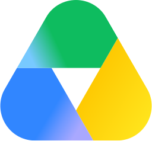
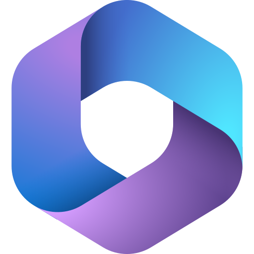
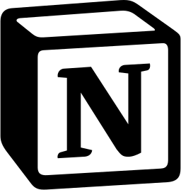
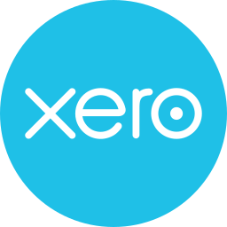

Automate repetitive work
Turn repetitive tasks, handoffs, notifications, data entry, follow-ups, and administrative processes into automated workflows.
- Reduce manual handling
- Minimize repetitive admin
- Improve process consistency
IRIS DELA ROCA
Optimizing Business Operations Through Intelligent Automation.
I design and implement AI-powered workflows, CRM automations, marketing systems and seamless integrations using n8n, GoHighLevel, Zapier, Make, APIs/Webhooks, and AI tools. By connecting applications and automating repetitive processes, I help businesses reduce manual work, streamline operations and build more efficient, scalable systems.
CONNECT. AUTOMATE. ACCELERATE.
HOW I HELP BUSINESSES
Faster follow-up. Better visibility. Systems built to scale.
Turn repetitive tasks, handoffs, notifications, data entry, follow-ups, and administrative processes into automated workflows.
Connect websites, forms, funnels, ads, CRM pipelines, calendars, email, SMS, and follow-up systems so fewer opportunities are lost.
I connect the applications your business already uses through native integrations, APIs, webhooks, Zapier, Make, n8n, and GoHighLevel.
Design CRM infrastructure, workflows, funnels, operational processes, and AI-powered systems that can support growing teams without adding unnecessary manual work.
THE BUSINESS IMPACT
AUTOMATED PROCESS
Reduce repetitive administrative work and manual handoffs.
COST EFFICIENCY
Use automation to handle work that does not require continuous human intervention.
REAL-TIME RESPONSE
Automatically acknowledge, route, qualify, and follow up with enquiries.
LEAD FOLLOW-UP
Create structured follow-up so opportunities do not disappear because someone forgot to respond.
SYSTEM VISIBILITY
Create organized CRM pipelines and workflows so teams understand what is happening at every stage.
SYSTEM OBJECTIVE
The objective isn’t automation for the sake of automation. The objective is a business that runs more efficiently.
US + UK
Client experience
15-agent
CRM environment
2011–2026
Professional experience
Operations + automation
Background
AI + CRM + marketing
Connected systems
FEATURED PROJECTS
Explore the problem, the architecture, and the work behind each project.
AI-powered customer conversations
Tech stack
Generates automated, context-informed responses to Facebook inquiries.
AI-assisted content distribution
Tech stack
Transforms source content into channel-ready formats and coordinates publishing.
Status-aware lead engagement
Tech stack
Coordinates CRM tasks and follow-up activities according to the lead’s stage.
From incoming lead to informed outreach
Tech stack
Enriches lead records and routes follow-up based on priority.
Connected financial operations
Tech stack
Automatically delivers exported transaction files to Asana.
Organized files, automated handoffs
Tech stack
Organizes incoming attachments and records their storage without repeating the same manual filing steps.
Intelligent intake and routing
Tech stack
Routes new and existing leads into distinct processing paths and keeps records updated.
Connected CRM and sales operations
Tech stack
Implemented approximately 20–30 workflows covering core lead and CRM activities.
Follow-up that responds to the lead
Tech stack
Coordinates multi-step follow-up and routes qualified contacts to document delivery.
A connected business presence
Tech stack
Delivered a website, brand identity, and marketing materials supporting the businesses’ digital presence and exhibition activity.
Have a similar workflow in mind?
Let’s ConnectWHAT I CAN BUILD FOR YOU
Pipelines, workflows, forms, calendars, funnels, contact management, automated follow-up.
AI agents, LLM-powered workflows, conditional automation, intelligent routing, automated customer interactions.
Website forms, landing pages, funnels, Facebook inquiries, CRM capture, qualification, follow-up.
Email sequences, SMS workflows, nurture campaigns, drip campaigns, customer journey automation.
REST APIs, webhooks, JSON mapping, authentication, and custom application connections.
Turn manual SOPs and repetitive operational processes into reliable automated workflows.
Organize leads, opportunities, conversations, tasks, stages, follow-ups, and customer data.
Business websites, landing pages, lead-generation funnels, forms, CTAs, and CRM-connected experiences.
Task management, onboarding workflows, process tracking, internal coordination, reporting, and quality control.
AI-assisted customer conversations, qualification, routing, FAQ support, and human escalation.
GoHighLevel · n8n · Zapier · Make · ChatGPT · APIs · Webhooks · Postman · HubSpot · Salesforce · Pipedrive · Zoho · ClickUp
AI & Workflow Automation: n8n, GoHighLevel, Zapier, Make, ChatGPT, AI agents, multi-step workflows, conditional logic, automated lead nurturing, LLM-powered customer support, AI workflow development.
CRM & Sales Automation: GoHighLevel, Podio, REISift, REsimpli, CRM administration, sales pipeline configuration, lead capture, contact management, automated follow-up.
API & Integrations: REST APIs, webhooks, OAuth/API authentication, JSON data mapping, Postman.
Marketing Automation & Web Development: GoHighLevel marketing funnels, lead-generation forms, email and SMS automation, Hostinger, website development, social media management, graphic design, email drip sequences, conditional workflows.
Operations & Quality Assurance: ClickUp, team onboarding, workflow coordination, process monitoring, troubleshooting, transaction tracking, invoicing and payroll administration.
Business Applications: HubSpot, Salesforce, Pipedrive, Zoho, Asana, Monday.com, Mojo Dialer, Batch Dialer, Lead Sherpa, RingCentral, Dialpad.
Let’s identify the right place to automate.
Let’s ConnectHOW I BUILD SYSTEMS
Start with the business process, the people involved, and the manual handoffs.
Define triggers, data, decision paths, and the systems that need to connect.
Implement the workflow and check its paths, data mapping, and response handling.
Make the workflow understandable, monitor its behavior, and refine what needs attention.
MY TECH STACK

Google Drive
Microsoft 365
Notion
XeroTESTIMONIALS
Feedback from the people I’ve built systems for.
Iris took our inquiries from scattered inboxes to an automated pipeline — the website, the branding and the follow-up workflows all work as one system.
She kept our CRM and a 15-agent team running like clockwork for years. Pipelines, follow-up, payroll, onboarding — nothing slipped.
Our funnels finally converted. Web-form and Facebook inquiries became managed buyer records without anyone lifting a finger.
GET IN TOUCH
Tell me where your leads, follow-ups or data are leaking —
I’ll show you what a system could do about it.